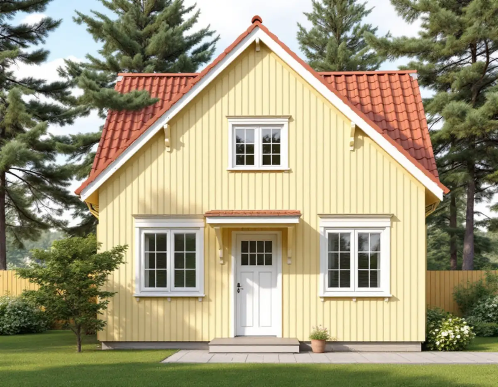
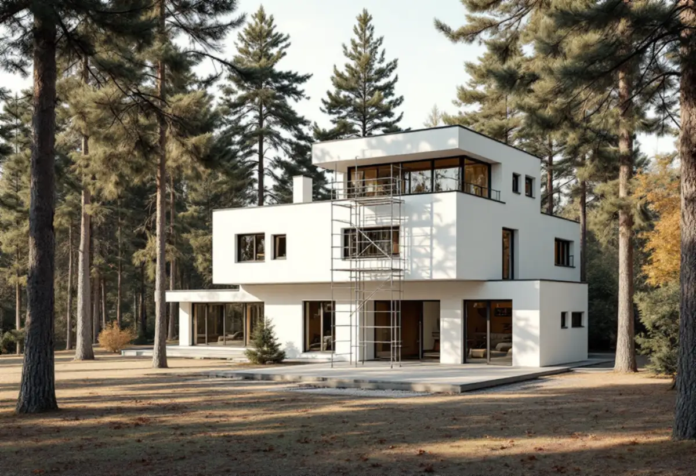

Platsbesök och prover
Vi tittar på panel, puts, fönster och knutar och gör skrapprov för att se vilken färgtyp som sitter på.
Ska villan i Bromma målas om börjar arbetet med två frågor: vad sitter det för färg på fasaden i dag, och ligger huset i ett riksintresse eller är det blå- eller grönmärkt på Stadsmuseets karta? Svaren styr både färgval och om du behöver söka lov. Geal Entreprenad AB har sin bas i Bromma och tar målningsuppdrag ute och inne, med gratis platsbesök och skriftligt kostnadsförslag.

Den vanligaste ytan en målare möter i Bromma är stående träpanel med smal lockläkt. Så kläddes de flesta hus i 1920-talets trädgårdsstäder – Ålsten, Smedslätten, Nockeby, Höglandet och Ulvsunda – och samma panel användes på småstugorna i Olovslund och Norra Ängby. Stadens vägledning för småhusområden beskriver färgskalan i trädgårdsstäderna som dämpade, ljusa nyanser av grönt, gult och grått. I småstugeområdena var kulörerna från början reglerade till ett fåtal ljusa toner, och den som ville ha traditionell rödfärg fick ansöka särskilt.
I Äppelviken är det nationalromantiska draget tydligare, med branta takfall och småspröjsade fönster. Fasaderna gjordes ofta av liggande panel eller spån som antingen tjärades eller ströks med röd slamfärg.
Södra Ängby, byggd 1933–39, är något helt annat: kubiska funkisvillor med svagt lutande tak och fasader i brutet vitt eller ljusgrått, antingen slätputsade eller klädda med liggande panel. På en putsad fasad handlar målningen om putsens sammansättning, sprickor och vidhäftning, inte om panel och lockläkt. Ska putsen lagas mer omfattande hör det snarare hemma under fasadrenovering.

Riksantikvarieämbetets handbok om traditionellt byggnadsmåleri ger ett enkelt råd: håll dig i de flesta fall till samma färgtyp som tidigare. Det gäller särskilt utomhus på ytor som har målats med linoljefärg, slamfärg, trätjära eller kalkfärg. Att stryka moderna produkter över äldre färgtyper beskrivs som en teknisk risk, eftersom nästa underhåll kan bli mycket besvärligt och det inte går att återgå till den gamla behandlingen utan att ta bort all färg.
Boverket gör en liknande distinktion i lovfrågan. Ett byte av kulör betyder en ändring av nyans, ton eller ljushet. Att gå från linoljefärg till plastfärg, eller från slamfärg till silikonhartsfärg, räknas inte som kulörbyte – men det kan bedömas som en påverkan på husets yttre karaktärsdrag. I en kulturmiljö som Brommas trädgårdsstäder är det därför klokt att låta färgtypen ingå i samma bedömning som kulören.
För en Brommavilla med äldre panel betyder det att färgprov och skrapprov på flera ställen kommer före offerten. Där huset redan har fått en modern täckfärg är det oftast den som får fortsätta, så länge underlaget är friskt.
Sedan 1 december 2025 krävs normalt inget bygglov för att byta kulör på ett en- eller tvåbostadshus, enligt Boverket. Undantagen är byggnader och områden med skyddsbestämmelser i detaljplan eller områdesbestämmelser, särskilt värdefulla byggnader och miljöer enligt plan- och bygglagen samt planer med utökad lovplikt. Att måla om i samma kulör räknas i regel som underhåll.
Stockholms stad skriver att du behöver söka lov för annars lovfria åtgärder om fastigheten ligger inom ett riksintresse för kulturmiljövården. I Bromma gäller det Norra och Södra Ängby, Olovslund och Ålstensgatan med sina 94 funkisradhus från 1932–33. Samma sak gäller om huset är markerat med blått eller grönt på Stadsmuseets klassificeringskarta. Är det gult eller grått och uppfyller inget av de andra kriterierna behövs normalt inget lov. Staden påpekar att kartan bara ger en första indikation och att alla hus ännu inte är inventerade.
För Södra Ängby finns dessutom en detaljplan från 1995 med skyddsbestämmelser för husens utformning. Söker du lov ska kulörerna anges i NCS, och även lovfria ändringar ska uppfylla plan- och bygglagens varsamhetskrav.
Inomhus är målning sällan en lovfråga, men husens historia syns även här. Småstugorna byggdes billigt och standardiserat efter katalogritningar, och i slutet av 1970-talet samlade Stadsbyggnadskontoret alla typritningar från 1927 till 1957 i en sammanställning för den som ville bygga om sin stuga. Ritningen visar hur huset var tänkt från början, vilket underlättar när man ska avgöra vilka väggar och snickerier som är original.
Där vinden har inretts i efterhand möts ofta nyare skivor, äldre panel och snedtak, och varje yta kräver sin egen förbehandling. I trädgårdsstadsvillorna från 1920-talet kan dörrar, foder och lister bära många lager färg som behöver slipas eller rengöras innan nytt stryks. Ska rummen samtidigt få nya golv eller ändrad planlösning kan målningen ingå i en större villarenovering.
Vegetationen i trädgårdsstäderna dominerades från början av tall och ädellövträd, och i Södra Ängby, som gränsar mot Mälaren, har den ursprungliga hällmarkstallskogen till stor del bevarats. Fasader som ligger i skugga större delen av dagen torkar långsamt och får lättare påväxt, så tvätt och torktid behöver planeras in innan första strykningen.
Väljer du linoljefärg anger Riksantikvarieämbetet maj till augusti som bästa period, med en fukthalt i träet på högst omkring 15 procent. Direkt solsken bör undvikas eftersom ytan kan torka för snabbt och bilda blåsor – bättre är att följa solen och stryka de sidor som redan har haft sol.
Vi tittar på panel, puts, fönster och knutar och gör skrapprov för att se vilken färgtyp som sitter på.
Vi går igenom Stadsmuseets klassificering, riksintressen och detaljplan så att du vet om kulörbytet kräver lov.
Underarbete, färgtyp, antal strykningar och ställning står med, så att förslaget går att jämföra.
Löst sittande färg tas bort, påväxt tvättas av och skadad panel eller puts lagas.
Färgen läggs i den ordning och med de torktider som färgtypen kräver.
Vi går igenom fasaden tillsammans och rättar det som behöver bättras.
För en villa ger Skatteverket rotavdrag för att måla fasader, fönster, golv, väggar och tak samt för tapetsering. Att måla staket eller murar ger inget avdrag. Avdraget är 30 procent av arbetskostnaden, högst 50 000 kr per person och år, och ROT och RUT får tillsammans vara högst 75 000 kr. Färg och annat material ingår inte.
Bor du i bostadsrätt i Bromma gäller avdraget bara arbete inne i lägenheten. Geal drar avdraget direkt på fakturan.
Mest styrs priset av underarbetet: hur mycket gammal färg som måste bort, hur mycket panel eller puts som behöver lagas och hur många fönster med spröjs som ska kittas och målas. Därtill kommer husets höjd och ställningsbehov, färgtypen och antalet strykningar. Vi gör ett gratis platsbesök och lämnar ett skriftligt kostnadsförslag.
Fasad, fönster och invändig målning.
Målare i Stockholm →Takbyte, takbesiktning och plåtarbeten.
Takläggare i Bromma →Trädgårdsstäder, tegel och funkistak.
Takrenovering i Bromma →Småspröjs, småstugor och funkis i Bromma.
Fönsterbyte i Bromma →Kupor, låga tak och bleck i Bromma.
Plåtslagare i Bromma →Lertegel, småstugor och solceller i Bromma.
Takbyte i Bromma →Småstugor, trädgårdsstad och prickmark.
Tillbyggnad i Bromma →